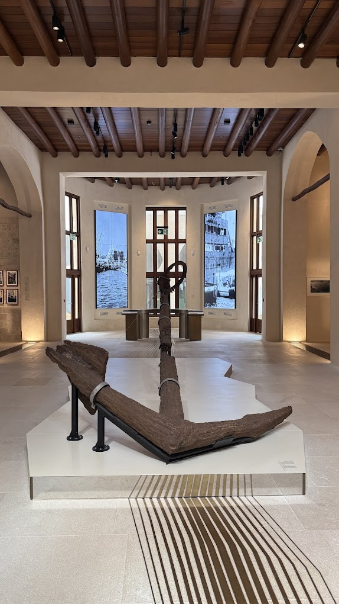

تجربة واقع معزز · تتبّع صورة
حكاية المرساة
وجّه كاميرا الجوال إلى صورة المرساة. عند التعرّف عليها، تظهر ثلاثة أسهم فوق الصورة؛ اضغط على أي سهم لعرض بطاقته بالعربية.
⬇ حفظ صورة الهدف
اسمح باستخدام الكاميرا، واعرض صورة الهدف على جهاز آخر أو اطبعها.

طريقة التجربة
١ · جهّز الصورةاعرض صورة المرساة على جهاز آخر أو اطبعها.
٢ · افتح الموقع على الجوالاسمح للمتصفح باستخدام الكاميرا.
٣ · وجّه الكاميراوجّهها نحو صورة المرساة لتظهر الأسهم فوقها.
تجربة مباشرة
وجّه الكاميرا نحو صورة المرساة
تظهر الأسهم بعد التعرّف على الصورة.
↗المادة والصناعة↗القصة والتاريخ
اضغط «تشغيل الكاميرا» لبدء التجربة